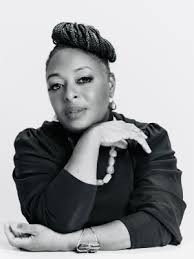

Tech Hero: Kimberly Bryant
Why we chose this person: We picked Kimberly Bryant because she saw a problem in tech — the lack of opportunities for young women of color — and decided to do something about it.
What they do: Kimberly Bryant is an electrical engineer who started Black Girls CODE in 2011. The organization offers coding workshops, hackathons, and mentorship for girls of color, preparing them for careers in STEM.
Impact: Black Girls CODE has reached thousands of students. It gives participants confidence, role models, and skills that help them pursue degrees and careers in tech. Bryant’s work also pushes tech companies to think harder about inclusion.
What we learned: Learning about Kimberly Bryant showed us that leadership in tech can mean creating opportunities for others. She built a solution that helps entire communities. This inspires us to think about how our own ideas could create access and fairness.